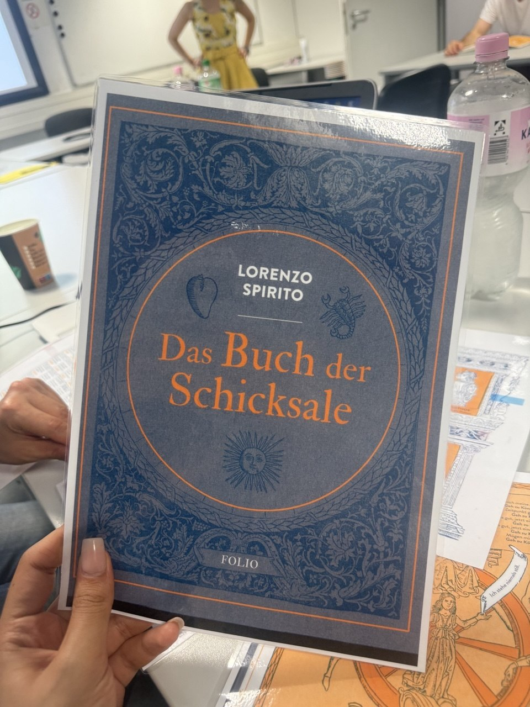
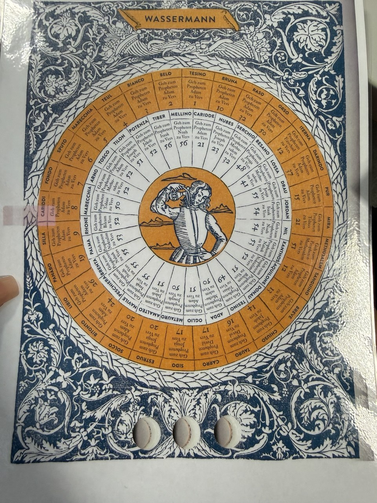
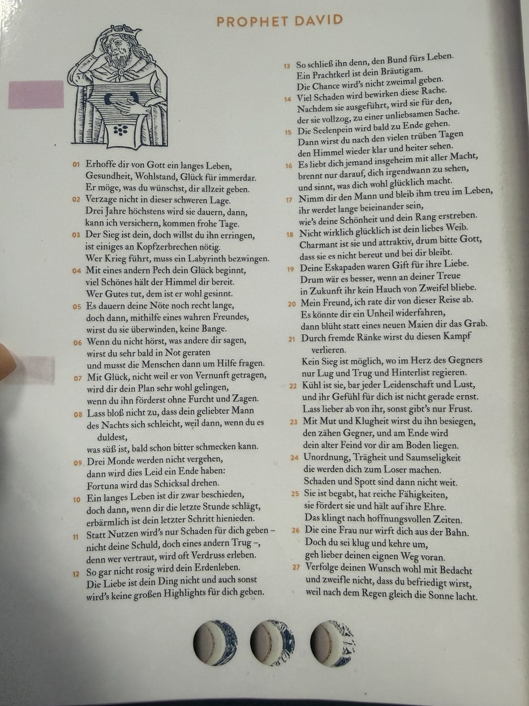
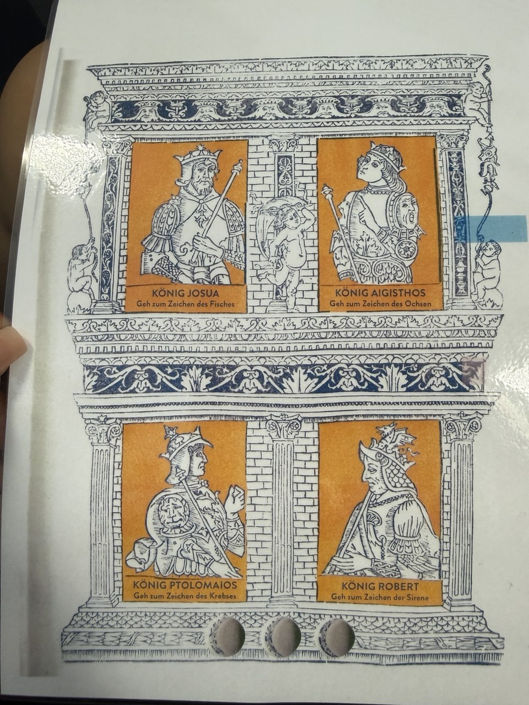
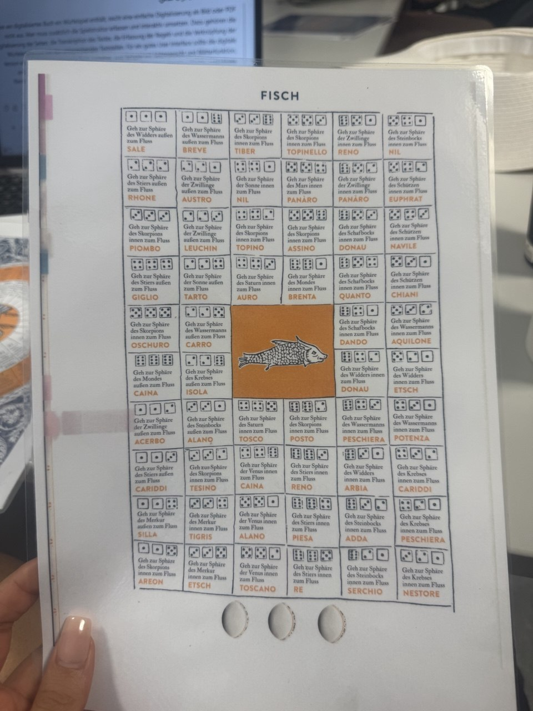
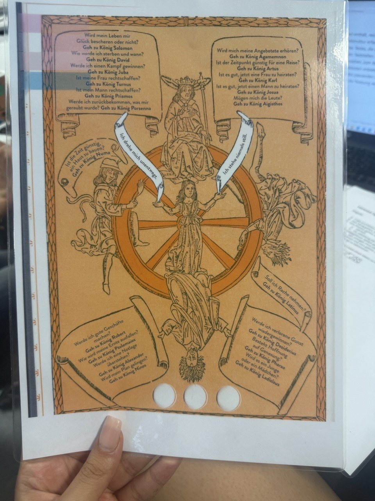
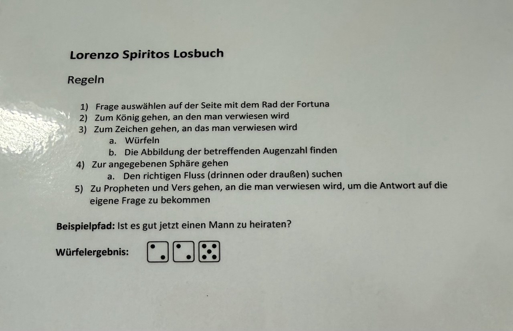
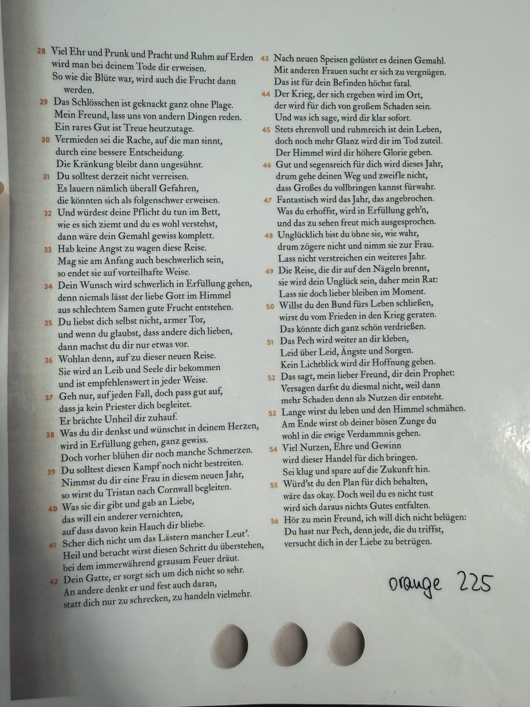
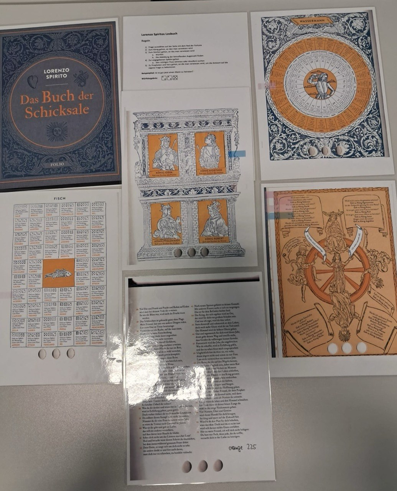

Sitzung 7: Digitale Editionen und Losbücher
Einleitung: In dieser Sitzung wurden die Themen Losbücher und digitale Editionen behandelt. Dabei wurde erklärt, was Losbücher sind, warum sie historisch wichtig sind und welche Möglichkeiten digitale Editionen für die Darstellung solcher Quellen bieten.
Losbücher
Losbücher waren Bücher, mit denen Menschen im Mittelalter Antworten auf Fragen über ihre Zukunft suchten. Sie galten als Wahrsagebücher und wurden von der Kirche oft verboten. Die Kirche war der Meinung, dass nur Gott die Zukunft kennen darf. Deshalb wurden Losbücher manchmal als „Lüge“ oder „Abgötterei“ bezeichnet. In einigen Handschriften findet man sogar Hinweise, dass man diesen Büchern nicht glauben soll. Die ältesten Losbücher wurden auf Latein geschrieben.
Aufbau und Nutzung der Losbücher
Vor der Benutzung eines Losbuches mussten oft bestimmte Rituale durchgeführt werden. Zum Beispiel
sollte man sich mit sauberem Wasser waschen oder Gebete sprechen. Danach konnte man eine Frage
stellen.
Manche Losbücher hatten eine feste Liste mit Fragen. Andere erlaubten freie Fragen. Beispiele
waren:
Wird ein kranker Mensch wieder gesund?
Ist diese Ehe eine gute Entscheidung?
Soll ich in eine andere Stadt ziehen?
Um eine Antwort zu erhalten, wurde ein Losmechanismus benutzt, zum Beispiel ein Würfel oder ein
Drehrad. Danach führte das Buch die Nutzerinnen und Nutzer über verschiedene Seiten und Stationen
bis zur Antwort.
Losbücher sind deshalb keine linearen Bücher. Sie werden nicht von der ersten bis zur letzten Seite
gelesen. Man springt zwischen verschiedenen Seiten, Bildern und Symbolen hin und her.
Bedeutung der Losbücher
Losbücher sind heute wichtige historische Quellen. Die Fragen der Menschen zeigen, welche Sorgen, Hoffnungen und Wünsche sie hatten. Außerdem kann man erkennen, welche Werte wichtig waren und welche Personen oder Figuren damals als Autoritäten galten. Auch sprachlich sind Losbücher interessant. Sie wurden in einer einfachen Sprache geschrieben und zeigen, wie Menschen im Alltag gesprochen haben.
Digitale Editionen
Eine Edition soll historische Texte nicht nur zeigen, sondern auch erklären. Alte Handschriften sind oft schwer zu lesen, die Sprache ist ungewohnt und die Schrift ist schwierig. Deshalb helfen Editionen dabei, historische Quellen besser zu verstehen. Digitale Editionen bieten noch mehr Möglichkeiten. Sie verbinden Texte, Bilder und Audio, sind interaktiv und stellen Informationen übersichtlich dar. Dadurch wird die Arbeit mit historischen Quellen einfacher. Bei Losbüchern ist das besonders wichtig, weil sie nicht nur aus Text bestehen, sondern auch Bilder, Symbole und verschiedene Wege zur Antwort enthalten.
Fazit
Zum Schluss wurde ein Losbuch praktisch ausprobiert. Dabei wurde deutlich, dass das Ziel nicht darin
besteht, möglichst schnell eine Antwort zu finden. Viel wichtiger ist die Erfahrung während der
Benutzung. Die Nutzerinnen und Nutzer bewegen sich durch verschiedene Seiten und erleben das Buch
wie ein Spiel.
Außerdem wurde gezeigt, wie ein Losbuch heute digital dargestellt werden kann. Ziel ist nicht nur
die Digitalisierung des Textes, sondern auch die ursprüngliche Nutzung und Erfahrung zu erhalten.
Dafür wurden Ideen wie Audio, Musik, verschiedene Sprachversionen und Virtual Reality vorgestellt.
Material aus der Sitzung








